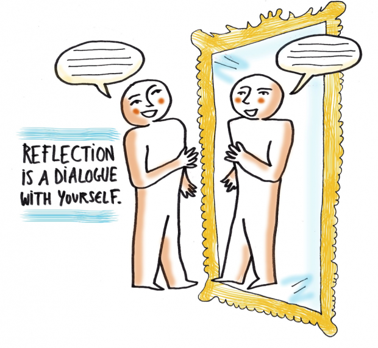

CMT 119-Computational Thinking
CMT 119-Computational Thinking
Programming has a reputation for being one of the most difficult disciplines to master.
Most people would feel programming language is very difficult to learn due to the complexity of the
instructions that computers comprehend and I was not an exception. Honestly, it was quite a
transition to me, from a non-technical background person to learning programming language from
scratch. Learning programming language is not as intimidating as it sounds. After learning computer
languages for a month, I now have the clearer concept on how a computer actually works and
understand the command from human. I also managed to learn about how to build a web page with HTML
and writing some codes in CSS to layout and design the web page.
Besides, the key skills of computational thinking allow me to work on my assessment in a more
efficient and effective way. I applied the concept of decomposition by dividing the whole assessment
task into multiple smaller tasks. I started with drafting my webpage layout in a piece of paper,
followed by creating and writing the content related to the questions and ended with designing and
structuring my webpage to a presentable view. Pattern recognition and abstraction by grouping the
similar content and hiding the unrelated information from my webpage. At last, I concluded with
algorithm design computational thinking skill by developing the webpage step-by-step according to
the flowchart that I drafted in initial stage.
Computational thinking skills are beneficial to me in every aspect. It helps me to understand the
problem better and derive solutions that are tailored to the questions. It also helps to ease my
workloads and reduce my working time significantly to develop a much efficient and effective
solution.
Upon completion of this assessment, I am confident that I have gained and equipped the
knowlodge and coding skills to be able to create and design a webpage that meets to the
requirements.
Nowadays, computational thinking is very crucial and it is the basic and fundamental knowledge that every student must learn and apply to solve any problem. In applying computational thinking, every student will be trained to behave like a problem solver, develop a growth mindset, collect and analyze data from multiple sources, think critically and creatively to sort out the problems. Having the right mindsets and skillsets will empower me to learn new knowledges and gain insights much quicker from the rest of my courses. Towards the end of my master’s degree, I will have the ability to perform problem solving skill with different programming languages. Persistency and determination of continuous learning computer science with computational thinking skills will permit us to solve real world problems in the future.